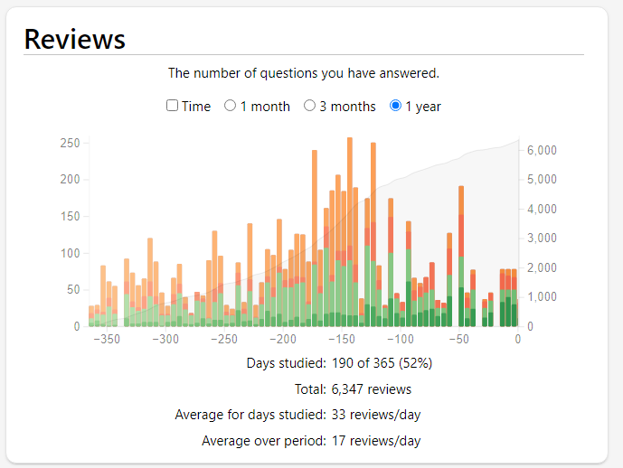

In the 2022-2023 school year, Saoirse attended two semesters of Ninos and Nature, a bilingual forest school. This was a three-day-a-week school that emphasized nature study/crafts and Spanish immersion through communication/song/play. In addition to this, we ran a fairly traditional academic homeschool roughly centered on The Well-Trained Mind, with some novelties like a rigorous logic/debate curriculum and orienting mathematics around mastery of the abacus. Details of specific subjects we studied along with videos demonstrating current abilities are found below.
This year marks Saoirse's transition to being an independent reader. About halfway through the school year, reading classes switched from being primarily focused on phonics, sightwords, and graded readers to being time set aside for independent reading (and assisted reading) through chapter books. We've also covered basic grammar terms (nouns/adjectives/verbs) and basic ideas from rhetoric (literal vs. figurative language)
Our phonics and sight word practice was straightforward: if we encountered a word or a "letter team" that Saoirse struggled with, we added it to the sight word/letter team list. We shuffled this list every day, and she read through the words. When she mastered a word, we removed it from the list. Here are the last iterations of the sight word/letter team wordlists before we switched over to mostly-independent reading:
Our emphasis has been on the abacus as a visual/physical tool for gaining arithmetic intuition. We completed the first book in the series Abacus Mind Math, which provides her with the ability to do addition and subtraction on an abacus up to and including the hundreds place (though we've also practiced up to the thousands as well), along with an ability to do simple mental math by visualizing and manipulating an imaginary mental abacus. In the above video you can see her demonstrating an understanding of place value and number bonds (in our book number bonds are called "little friends" and "big friends", so you'll hear her saying that) while doing two-digit arithmetic problems.
Later in the school year we started switching things up a bit and throwing in word problems/puzzles/etc involving three/four-digit arithmetic problems:
We used the first volume of Story of the World as our main text, which focuses on ancient history. For almost every chapter, we added flash cards that we work through on a near-daily basis using the flash card software Anki, totaling 359 new flash cards in the past year. We had an additional focus on comparative religion in the past year, focusing primarily on Judaism, Hinduism, and Buddhism (touching on Christianity and Islam, but mostly saving those for when the history book gets to them).
The following album provides a sampling of the flash cards we added this year. As you'll see, there's also a strong focus on geography (this year we memorized all the continents and oceans) and a smattering of miscellaneous cards that cover any unfamiliar concepts that come up in the course of any reading (e.g, the definition of hospitality).
We've been very consistent with our flash cards for years. Here's a graph of how many reviews we did per day over the past year:
We routinely practiced formal debate in the tradition of Tibetan Buddhism, usually at least once a week, with the text "The Course in Buddhist Reasoning and Debate" as my guidebook. We debated topics of interest from history, religion, and our everyday lives, learning to make fine distinctions between, for example, "being nice" and "being good", "being fair" and "distributing goods equally", etc.
In the debates we're conducting, Saoirse is trying to prove how two concepts relate. Let's say the two concepts are apples and fruit. Her choices would be the following:
References/work:
Saoirse has been continually involved in various local art and ballet classes. I've also explicitely worked with her on basic life drawing skills. Above is a gallery of some of her artwork (and a ballet photo) from the past year.
Saoirse was also lucky to be able to attend a performance of the ballet Giselle last year in Raleigh, NC.
Learning the names and faces of major composers has been part of our history work, and I rotate major works by those composers during homeschool time, talking about which one I'm playing. Composers covered include Palestrina, Hildegard von Bingen, Bach, Beethoven, and Chopin.
Additionally, because of her ballet obsession, she's very familiar with Tchaikovsky, especially pieces from The Nutcracker and Swan Lake.
As mentioned above, Saoirse was involved in a local bilingual Spanish/English forest school for six months of the past year, and she's been exposed to many languages at home. I'm a Latin speaker and general language enthusiast, so she has a passing familiarity with the names and sounds of various languages. She likes to listen to various Tibetan, German, and Hebrew songs.
I'm learning Spanish concurrently with her, and I make heavy use of the Dreaming Spanish video library. She and I occassionally watch videos there together, and I plan to ramp up our at-home Spanish after I move beyond the intermediate level.
{kind=link}
{kind=link}
{kind=link}
{kind=link}
{kind=link}
{kind=link}
{kind=link}
{kind=link}